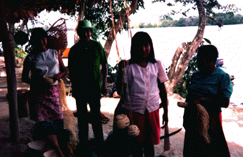

HOME FUNDEF
FUNDACIF
FUNDACIF
|  |
La Fundación de Acción Cultural Indígena y Fronteriza, es una organización de naturaleza civil, constituida legalmente en 1993,de carácter autónomo, sin fines de lucro y con personalidad jurídica su propia ESTRUCTURA ORGANIZATIVA .
Tiene por objeto contribuir a la formación, investigación y asistencia en el campo de la acción cultural indígena.
ANTECEDENTES
Siguiendo los lineamientos programáticos de la Dirección General Sectorial de Desarrollo Regional, del Consejo Nacional de la Cultura (CONAC), en cuanto a la implementación de proyectos de carácter regional y comunitarios que faciliten la participación de grupos y cultores en toda su extensión, en el año 1991, se diseño un conjunto de acciones que generara la puesta en práctica de un proyecto de apoyo a las sociedades indígenas, que permitiera superar:
- Poca valorización y escasa difusión de las expresiones culturales indígenas.
- Ausencia de mecanismos que generen intercambio y comunicación entre los diferentes grupos étnicos indígenas venezolanos, como proceso de afianzamiento de la identidad cultural.
- Escasos programas de adiestramiento y formación, dirigido a líderes y maestros indígenas, como agentes de resguardo de su cultura.
Debido a las limitaciones presupuestarias y de entendimiento de la importancia, magnitud y compromiso de un proyecto de esta índile, los profesionales convocados para la realización y desarrollo de las acciones antes mencionadas, toman la decisión de organizarse y surge la creación de la FUNDACION DE ACCION CULTURAL INDIGENA Y FRONTERIZA (FUNDACIF).
OBJETIVOS
Dicha organización (FUNDACIF), se ha planteado como objetivo primordial la formación del recurso humano para contribuir a la conducción de los destinos de los habitantes que representan nuestra base histórica_cultural.
En tal sentido se propone:
- Aportar servicios docentes para la elaboración e instrumentación de proyectos culturales.
- Ejecutar labores de investigación referidas al patrimonio cultural y natural.
- Apoyar los procesos de creación y revitalización de las potencialidades culturales indígenas.
- Contribuir a la consolidación, promoción y difusión de las manifestaciones culturales en proceso de extinción, a traves de un registro audiovisual.
A tales efectos, se han venido realizando talleres de "Formación para la autogestión y comercialización de la producción" y "Formación para el promotor cultural indígena" , con miras a propiciar el auto-desarrollo de las comunidades indígenas.
OBJETIVOS POR TALLER
" Formación para la Autogestión y Comercialización de la Producción"
- Estimular la participación de trabajadores asociados de la micro-empresa y comunidad en general, para mantener los canales de comunicación y cooperación necesaria para la solución conjunta de sus problemas.
- Organizar técnicamente todo lo concerniente al trabajo de la producción y sus similares.
- Capacitar a los asociados para el proceso de producción y administración de la micro-empresa.
- Buscar formas de comercialización, que conlleven a una justa distribución para los productores y mejores precios a los consumidores.
- Fomentar actividades económicas, sociales, culturales y cívicas en la comunidad.
- Facilitar la adquisición de materia prima, insumo necesario para la elaboración y comercialización de la producción.
" Formación para el Promotor Cultural Indígena "
- Indagar e investigar entre los ancianos de la comunidad, para revalorizar las manifestaciones culturales entre la población infantil y juvenil.
- Velar porque se mantengan vivas las manifestaciones culturales tradicionales de las etnias, a saber: la música, los cantos, instrumentos musicales, danzas, bailes, mitología, vestuario, juegos, representaciones socio-culturales, cuentos y el aspecto mágico-religioso.
- Establecer relación con los maestros de la comunidad para el proceso de difusión de sus investigaciones.
La formación de recursos en el área de la promoción cultural indígena, reviste un carácter de importancia debido a que el promotor debe ser el agente dinamizador de su propia comunidad para que esta descubra y decida la interrelación que existe entre sus propios recursos y ajenos para su aplicación en un proyecto colectivo.
El promotor cultural indígena, es el animador de su propia cultura, debe lograr la afirmación personal y colectiva dentro de la comunidad, alcanzando un proceso de reflexión centrado en la cuestión étnica y en los diversos aspectos que sustentan la afirmación cultural y la recuperación de la gestión social de las comunidades indígenas.
Paralelamente al desarrollo de los talleres, FUNDACIF viene realizando una investigación arqueológica en el Estado Apure.
Como resultado de los trabajos de campo en esa entidad, especificamente entre los Municipios Muñoz y Rómulo Gallegos, se localizarón yacimientos arqueológicos asociados a sitios habitacionales y lugares de enterramientos.
La investigación se encuentra en proceso de hacer la comparación estilística de la cerámica para determinar los fechamiento relativos. Igualmente, establecer patrones de poblamientos y definir a que grupos estan asociados estos restos de cultura material, entendiendo que la zona del Estado Apure conjuntamente con el Estado Barinas, fueron las vías de penetración de una de las tradiciones polícromas de lo que hoy conocemos como Venezuela.